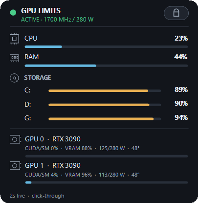

Windows / NVIDIA public alpha
Keep the workstation honest.
A tiny click-through HUD that verifies whether your GPU profile survived this boot, keeps both cards readable, and helps you measure power limits before you trust them.
Unsigned pre-release. Windows 10/11 and NVIDIA are the current supported path. GPU changes are separate, explicit and elevated.

Four questions. One quiet surface.
CA AutoConfig connects state, placement and evidence without turning the desktop into a control room.
-
01
Did the profile apply?
The indicator stays red when the current boot does not match the UUID-pinned power and clock profile.
-
02
What is each card doing?
CUDA/SM load, VRAM, watts/cap, temperature and graphics clock remain separate per GPU.
-
03
Where should it live?
A visual monitor map reads the Windows topology. Unlock, drag, set opacity, choose a shortcut, then return to click-through mode.
-
04
What does a lower limit cost?
Ollama, llama.cpp and ComfyUI adapters keep throughput, power windows and failures explicit before any candidate becomes advice.
Evidence first. Settings second.
The repository publishes raw methods and failed gates. A fixture can test the math; it cannot become hardware proof.
Installed HUD / idle observation
Inspect all 60 samples- Mean CPU
- 0.0114%
- p95 CPU
- 0.0245%
- Working set
- 66.445 MiB
- Non-responsive
- 0 / 60
One 120-second idle run of installed v0.2.5-alpha.2 on a 32-logical-processor maintainer machine. This is not a universal footprint promise or a current-release comparison.
Unknown is not green.
The normal HUD is unprivileged and read-only. Optional GPU writes live behind a separate, narrow path.
Normal-user monitoring
No application analytics, update client or hidden upload. Missing telemetry stays unknown.
Explicit hardware changes
Applying a profile requires exact targets and values, hardware-risk acknowledgement and UAC.
Board-aware boundaries
The advisor remains inside driver-reported ranges and never raises an existing lower cap silently.
Exact rollback
The protected helper records pre-change power values and refuses to guess after identity or state mismatch.
Install the HUD. Keep mutation optional.
Download the ZIP, checksum and standalone verifier from the latest release. Verify before extraction, then install the standard-user desktop app.
.\Verify-DesktopPackage.ps1 -PackagePath .\CA-AutoConfig-Desktop-v0.2.6-alpha.4-win-x64.zip -ExpectedVersion 0.2.6-alpha.4
.\Install-DesktopApp.ps1